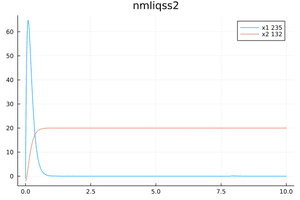
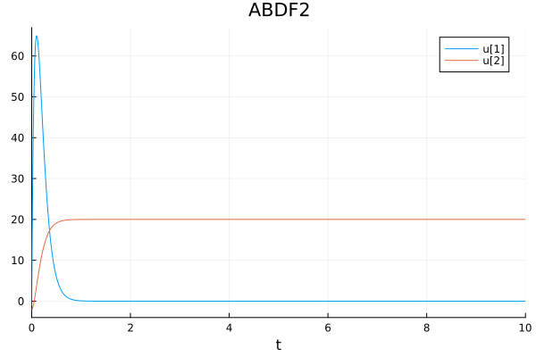
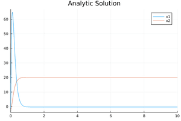

Linear Time Invariant
using QuantizedSystemSolver
function sysb53(du,u,p,t)
du[1] = -20.0*u[1]-80.0*u[2]+1600.0
du[2] = 1.24*u[1]-0.01*u[2]+0.2
end
u0 = [-1.0, -2.0];tspan=(0.0,10.0)
#Construct the problem
odeprob = ODEProblem(sysb53,u0,tspan)
#Solve the problem
sol = solve(odeprob,nmliqss2())
p1 = plot(sol);The analytic solution is given by the following equations:
x1(t)=105.83453057676363*-8.83362618880318*exp(-10.943696474115944*t)-127.91533865757171*-7.303470585390368*exp(-9.046303525884058*t)-0.32323232323231316
x2(t)=105.83453057676363*exp(-10.943696474115944*t)-127.91533865757171*exp(-9.046303525884058*t)+20.08080808080808Then use DifferentialEquations instead of QuantizedSystemSolver and use solvers such as ABDF2(), QNDF2(), QBDF2(), or Trapezoid() instead of nmliqss2. The plots are displayed below:
LTI plot using QuantizedSystemSolver.jl

LTI plot using DifferentialEquations.jl

LTI plot using the analytic solution

This is a great example that shows when we need to use the explicit qss, the implicit liqss, or the modified implicit nmliqss. This is a stiff problem so we need to use the implicit methods, but it also contains larger entries outside the main diagonal of the Jacobian. Therefore, nmliqss should the most appropriate algorithm to use.
There is another syntax to define a problem through a macro @NLodeProblem as it is shown in the following code.
using QuantizedSystemSolver
odeprob = @NLodeProblem begin
name=("sysb53",)
u = [-1.0, -2.0]
du[1] = -20.0*u[1]-80.0*u[2]+1600.0
du[2] = 1.24*u[1]-0.01*u[2]+0.2
end
tspan=(0.0,10.0)
solqss=solve(odeprob,qss2(),tspan);
solliqss=solve(odeprob,liqss2(),tspan);
solnmliqss=solve(odeprob,nmliqss2(),tspan);
(solqss.stats.totalSteps,solliqss.stats.totalSteps,solnmliqss.stats.totalSteps)
# output
(843, 833, 84)